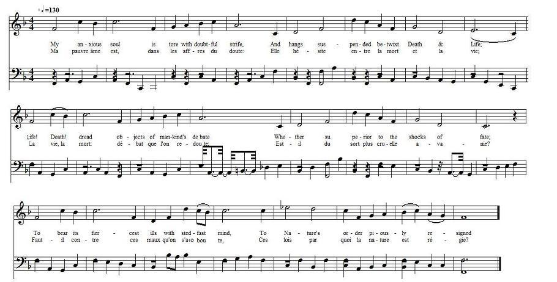

Soliloquy
Soliloque
Wrote by Mr William Hamilton & found in his
pocket when taken prisoner at the Battle of Culloden
Tune - Mélodie
No music known. Replaced here by "Lord my soul thirst" by Vanje Y. Watkins (1938)
Sequenced by Christian Souchon


|
A Soliloquy
Wrote by Mr Wm Hamilton & found in his pocket when taken Prisoner at the Battle of Culloden. [1] 1. My anxious soul is tore with doubtful strife, And hangs suspended betwixt Death & Life ; Life! Death! dread objects of mankind's debate Whether superior to the shocks of fate ; To bear its fiercest ills with steadfast mind, To Nature's order piously resigned : [2] 2. Or with magnanimous and brave disdain Return her back th' injurious gift again. Oh ! if to die, this mortal bustle o'er, Were but to close one's eyes & be no more; From pain, from sickness, sorrows, safe withdrawn, In night Eternal that shall know no dawn : 3. This dread, imperial, wondrous frame of Man, Lost in still nothing, whence it first began; [3] Yes ! if the grave such quiet could supply, Devotion's self might even dare to die ; But fearful here, tho' curious to explore, Thought pauses, trembling, on the hither shore; 4. What scenes may rise, awake the human fear, Being again resumed, and God more near: If awful thunders the new guest appal, Or the soft voice of gentle mercy call; This teaches life, with all its ills to please, Afflicting poverty! Severe disease! 5. Relief from racking doubts we find in pain, In scorn's proud insults & oppressor's chain, To lowest infamy gives power to charm And strikes the dagger from the Boldest Arm; Then Hamlet cease, thy rash resolves forgo, God, Nature, reason, all will have it so ; 6. Learn by this sacred honour well suppress't [4] Each fatal purpose in the traitor's breast; This damps revenge with salutary fear, And stops ambition in its wild career; Till virtue for it's self begin to move, And servile fear exalts to filial love. 7. Then in thy breast let calmer passions rise, Adore thy lot, and just, absolve the skies. [5] The ills of Life see friendship can divide, See Angels warring on the just man's side : Alone to virtue, happiness is given, On Earth self-satisfied & crowned in HEAVEN Source: "English Jacobite Ballads...from the MS at Towneley Hall" by A.B. Grosart (1877), page 49 |
Soliloque
rédigé par M. William Hamilton et trouvé dans sa poche quand il fut fait prisonnier à la bataille de Culloden [1] . 1. Ma pauvre âme est, dans les affres du doute: Elle hésite entre la mort et la vie; La vie, la mort: débat que l'on redoute: Est-il du sort plus cruelle avanie? Faut-il contre ces maux que l'on s'arc-boute, Ces lois par quoi la nature est régie? [2] 2. Ne vaut-il pas mieux, brave et magnanime, Lui retourner son injurieux cadeau? Et si mourir, ce souci qui nous mine, N'était rien d'autre que des yeux qu'on clôt? Finis les soucis, les maux, les famines Dans cette nuit d'où le jour est forclos. 3. Cet impérieuse horreur qui t'environne, Homme, est le néant calme où tu naquis. [3] Et si c'est semblable repos qu'il donne, Le moins enclin même, au tombeau sourit. Pourtant craintive, s'attarde et s'étonne La pensée curieuse aux rives d'ici. 4. Quels aspects viendront exciter nos craintes, Lorsque nous serons rappelés à Dieu? Sera-ce, hôte nouveau, jamais éteinte La foudre, ou la voix du pardon gracieux? La vie nous fit accepter ses contraintes, La pauvreté, les maux les plus affreux. 5. Quel remède aux doutes qui vous habitent Aux quolibets haineux de l'oppresseur! A ce charme l'infamie ne résiste Et le poignard échappe au bras vengeur. Hamlet, tu t'es décidé bien trop vite. Ecoute Dieu, ton sage créateur! 6. Sache bien que cet[te] ho[nn]rreur sacré[e] prime [4] Sur ce qu'un traître ourdit de noirs desseins. Il s'inquiète et sa rancune décline, Elle impose à ses projets fous un frein. Si bien que c'est la vertu qui l'anime: Jusqu'à l'amour la peur se hausse enfin. 7. Qu'en ton cœur règne une ardeur plus paisible, Aime ton sort! Sois juste! Absous les Cieux. [5] Les maux de la vie, l'amour les divise. Les justes les anges s'arment pour eux: La vertu seule rend cela possible, Etre heureux sur terre et élu de DIEU. (Trad. Christian Souchon (c) 2011) |
|
[1] The heading of the "Soliloquy" is important as
establishing the hitherto unverified statement in Burke's
"Landed Gentry" (s.n.) that
William Hamilton
"was present at the battle of
Culloden."
The last editor of the "Poems and Songs of Hamilton" (i vol., 1850), James Paterson, says: "It is uncertain whether Hamilton took any active part in the rebellion. He was probably prevented from doing so, as Mr. James Chalmers supposes, by the illness of his wife, to whom he was much attached, and who died in 1745." (p. xxxi). Referring to Burke (as supra) he continues: "As there are several obvious blunders in the article, little reliance is to be placed upon it. Be the fact as it may, however, his Jacobite hopes were completely extinguished by the decisive victory of Culloden ; and he was constrained to consult his safety in flight, lurking for several months in the Highlands, where he suffered much, both physically and mentally." (p. xxxii). [2] The " Soliloquy " appeared anonymously in the "Scots Magazine" for June, 1746. It has been reprinted in all the editions of Hamilton's Poems. The present version, omits this couplet: — " Lest, hapless victors in the mortal strife, Through death we struggle but to second life." [3] On the other hand, [these two lines] of our MS. do not appear in any of the editions. [4] [This word] reads "horror "for "honor"; [5] And [this] last line [reads] " Pleas'd with thy lot." Theses notes are copied from A.B. Grosart |
[1] L'intérêt du titre complet du "Soliloque" est de corroborer les dires de Burke dans "Landed Gentry", lequel était jusqu'alors le seul à affirmer que
William Hamilton
"était présent à la bataille de Culloden".
Comme l'écrivait l'éditeur des "Poèmes et chants de Hamilton" (1er vol., 1850), James Paterson: " On ne saurait dire si Hamilton a pris une part active à la rébellion. Sans doute en fut-il empêché, comme le suppose M. James Chalmers, par la maladie de sa femme à laquelle il était très attaché et qui mourut en 1745. (P. XXXI) Après avoir cité Burke (cf. supra) il ajoute: "Compte tenu des nombreuses erreurs que renferme son article, on ne peut lui accorder que peu de crédit. Quoi qu'il en soit, les espérances Jacobites [de Hamilton] furent ruinées par la victoire décisive de Culloden. Et il en fut réduit à rechercher son salut dans la fuite et à se cacher dans les Highlands pendant plusieurs mois d'épreuves tant physiques que morales." (p. xxxii) [2] Le "Soliloque" parut sans nom d'auteur dans le "Scots Magazine" de juin 1746. C'est la version qu'on retrouve dans toutes les éditions des Poèmes d'Hamilton. La présente version omet ce couplet: - "De peur que vainqueurs, au bout de la route, L'enjeu ne soit qu'une seconde vie. [3] En revanche, [ces deux vers] de notre manuscrit ne sont repris par aucune édition. [4] Il faut sans doute lire "cette horreur sacrée" au lieu d'"honneur". [5] Tandis que ce dernier vers se lirait "Satisfait de ton sort". Ces notes sont celles de A.B. Grosart |
|
|
|